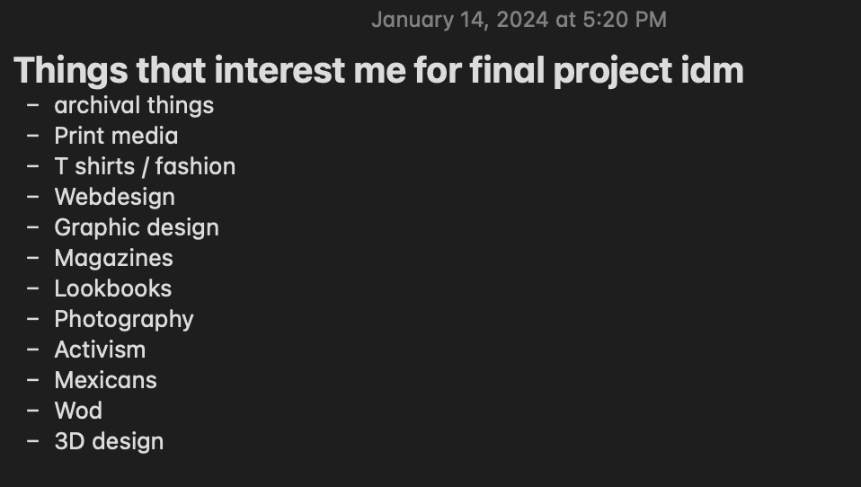
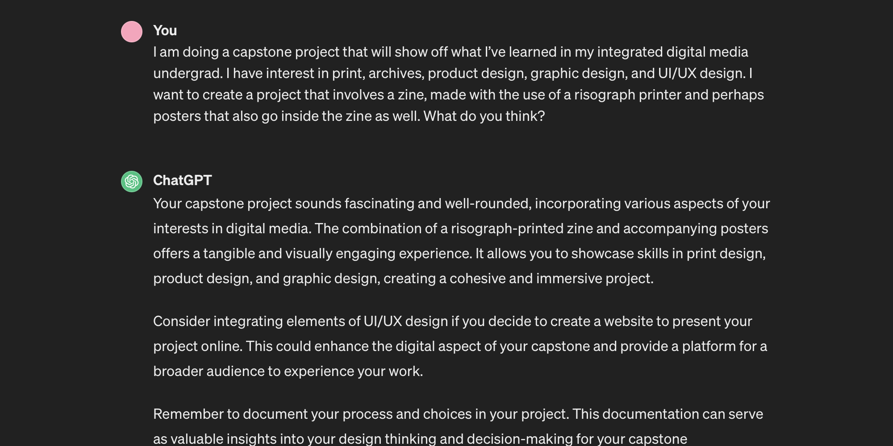
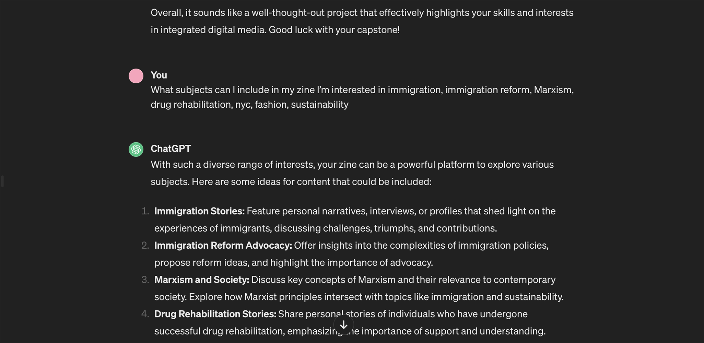

this was our first week in class and we were asked to present initial brainstorming ideas and direction of our project.
walking into class i had a rough sketch of ideas i found interesting but nothing really set in stone. here is a screengrab of my notes:

as far as personal interests i have, i really like web and graphic design, and i want to be a a ux/ui designer so i want a project that can show case those skills. we were also tasked in class to ask chatGPT on project advice. it honestly did give me a lot of helpful advice, here is screenshots of my conversation with it:


im not entirely set on the subject matter just yet but i do know i want to use the risograph printer and have a digital aspect to it.